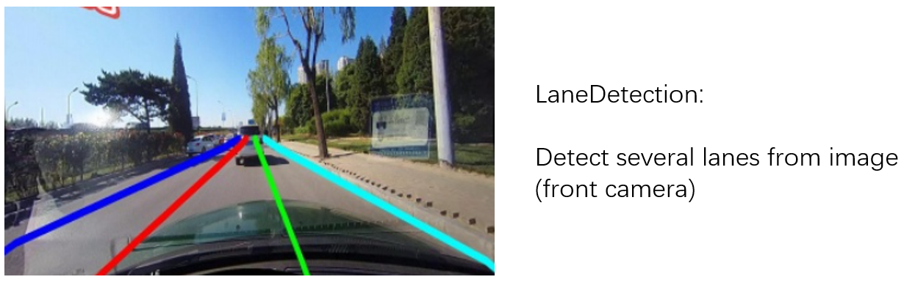
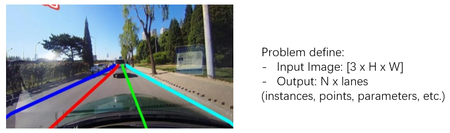
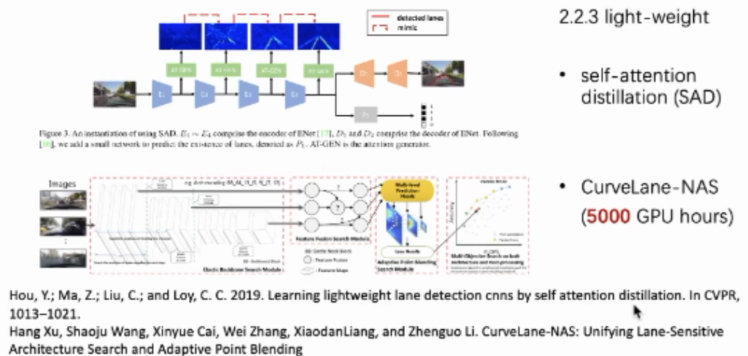
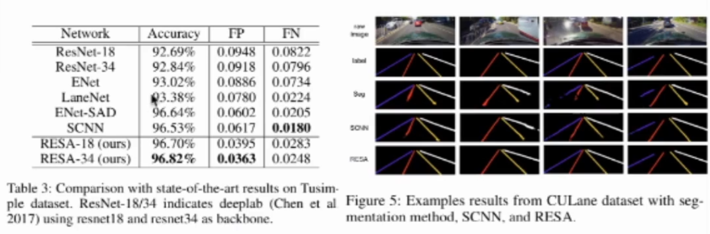

车道线检测方浩AAAI2021新SOTA-RESA分享总结
车道线检测LaneDetection
车道线检测是自动驾驶领域里环境感知环节重要的一部分，之前在商汤实习有接触到项目中的轻量级车道线检测是使用Gridding方法，但没有全面了解过车道线检测，借此次干货分享学习一下~
1.Background
 车道线检测顾名思义如图中所示 检测并预测补全所输入的RGB图像中的K条车道线，每条车道线互相独立类别不同。 上图所示为自动驾驶的实现思路，我们首先通过各种不同的sensors获取周围环境的数据(RGB或RGBD图像，三维点云等)，再使用环境感知算法分析数据，得到感知定位结果并送入Planning规划环节。在Planning环节中通过对感知的环境结果进行分析，做出行为路线等规划，做出决策，车辆控制单元接收到决策，从硬件上操控车辆实现各种驾驶操作。
车道线检测作为环境感知中非常重要的一部分，对于车辆驾驶决策有以下几点作用：
- 判断当前车辆所在车道，并保持车辆在车道内行驶防止偏向变道。
- 变道时判断变道行驶角度，并决定何时变道结束。
- 判断其他车辆所在车道，并预测其他车辆驾驶可能驾驶轨迹。
车道线检测的定义：

输出有多种形式，根据不同方法有不同输出，可以为instances的mask，我直接输出检测出的mask，也可以为一些点，将这些点连为直线或曲线便为车道线，也可为一些参数，通过这些参数拟合曲线。
车道线检测主要的难点：
- 遮挡严重，线为一段一段的而我们需要补全，同时可能路面有磨损 有些地方车道线看不清
- 线又细又长，不想目标检测 语义分割，我们有大块物体可供检测分割，车道线是细长的，在图像中比例不大。
- 实时性，因为我们需要在自动驾驶中使用，所以需要实时性。
2.Related Work
车道线检测的工作主要有下面几个方向：
- Traditional methods
- Semantic / instance segmentation-based
- New formulation (gridding, polynomial, anchor-based, etc.)
传统方法，语义/实例分割方法以及一些比较新奇的思路。传统方法实用性较差，目前大部分方向都集中于第2、3类。
97年的传统方法，首先将RGB转为灰度图，再做高斯模糊，然后用Canny算子检测边缘部分，霍夫变换检测出图像中的直线。所得到的直线并不知道直线的起点与终点所以就如图所示两条直线，所适用场景比较局限。
两个分支，一个学习pixel embedding一个学习mask，将预测出的线的位置乘以embedding，再用聚类分出来不同的线。此方法思路比较简单，但依赖于聚类，也同样不知道车道线起始与终点，效果并不是很好。
基于语义分割的很直接的方法，K条线则为K个类别，每条线对应一个类别，最终输出一张含有多个类别的mask，则输出了多条线。本篇工作还用了类似RNN方法，把信息在H与W维度上进行传递。

后续好多基于分割的方法都致力于将模型轻量化，如上图，第一个方法使用蒸馏，第二个方法使用NAS。
下面这种方法就是Gridding，将图像分成多个小块，我个人理解就是将图像进行下采样，通过各种方式预测出来的grids作为点，最后连接成为车道线。还有其他等等新奇的方法……
3.RESA
论文地址：RESA
Intuation：
作者一开始的想法跟我一样….：车道线检测看起来就是语义分割，那么我们直接用语义分割当中的算法训练不就可以了吗？作者进行了实验(deeplab)发现语义分割算法得到效果很差，于是有了以下分析：
Why classical segmantic segmentation does not work?
- Severe occlusion & ambiguous lanes
- Sparse supervisory signals inherent in lane annotations (thin and long)
主要来说就是车道线这种特殊case的特殊性：跟语义分割不同，车道线所占区域很窄很小，就如同语义分割中电线杆类别，很容易误检错检，与此同时语义分割是所见即所得，但是车道线因为有虚线所以还需要算法进行自动补全，这是语义分割算法所缺失的 (本次分享及作者的论文其实感觉主要就是解决这个问题的，但是感觉他的特征传递方法work的原因并不是作者想的那样)。
sturcture:
主要的思想如上图，把特征图进行切片，再以一定步长横向(W维度)纵向(H维度)进行特征的传递，其实这种思路已经很常见了，在3D检测与语义分割中都有人使用过，在车道线检测中SCNN也是这种思路。
网络结构如上图，很简单，总体就是分割当中的Encoder->head->Decoder。
- Encoder就是普通的特征提取网络，VGG ResNet等，根据不同需要 是想实时性还是精确度酌情选择backbone
- Head中就为作者提出的RESA模块，在横向与纵向上进行传递，细讲就是首先对特征在横向及纵向上进行切片，对于切片后的每一片特征都用1x1卷积进行变换，然后以一定步长加到后面的特征上，很简单。如下图就是从右向左传递。
- 上采样部分作者没有采用简单的插值上采样 而是添加了一个反卷积分支，以此来继续修正结果：
Results:
结果部分比较常规，提分感觉并不是很高，而且速度上也并不是特别快….（消融实验我就不贴了）

后续有机会继续看一下车道线检测